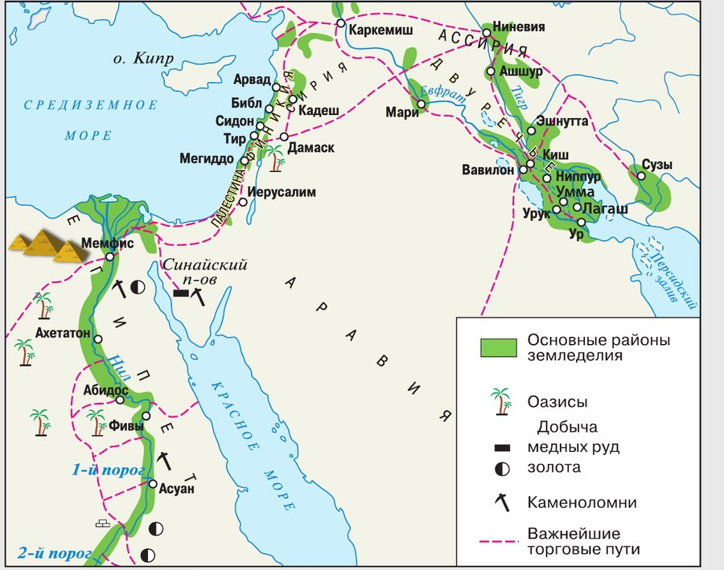

▲ Назови древнейшие цивилизации Древнего Востока, которые видны на этой карте.
Что такое цивилизация
На смену первобытности пришла эпоха . Цивилизация — это общество, достигшее высокого уровня развития.
Как её узнать? По трём приметам: появляются города — центры ремесла и торговли; строятся величественные сооружения — храмы, городские стены, плотины и дамбы; возникает письменность.
Первые цивилизации зародились примерно 5 тысяч лет назад на — протяжённой территории от Северо-Восточной Африки до Южной и Восточной Азии, включая Индию и Китай.
Почему именно там? Здесь, в долинах великих рек — Нила, Тигра, Евфрата, Инда, Хуанхэ и других, — можно было собирать обильные урожаи.
На смену первобытности пришла эпоха цивилизации. Цивилизация — это общество, достигшее высокого уровня развития. Для эпохи цивилизации характерно появление городов как центров ремесла и торговли; строительство величественных сооружений — храмов, городских стен, плотин и дамб; возникновение письменности.
Первые цивилизации зародились примерно 5 тысяч лет назад на Древнем Востоке — протяжённой территории от Северо-Восточной Африки до Южной и Восточной Азии (включая Индию и Китай). Здесь, в долинах великих рек (Нил, Тигр, Евфрат, Инд, Хуанхэ и др.), можно было собирать обильные урожаи.
- Что такое цивилизация? Выдели признаки цивилизации.
1. Почему все первые цивилизации выросли именно в долинах больших рек?
2. Почему из трёх примет цивилизации письменность самая важная для нас с тобой?
Итоги главы: семь цивилизаций
Здесь нарочно оставлены слова учебника: именно так итоги главы написаны в книге. Трудные из них можно нажать — , , , , , , , , , , , , , .
3. Египет и Междуречье начались примерно в одно время, а Индия и Китай — гораздо позже. Значит ли это, что индийцы и китайцы были «отсталыми»?
4. В итогах сказано: ассирийские правители «считали себя царями царей и постоянно воевали с соседями». А персов тоже называли «царями царей». В чём разница?
5. Иудаизм назван самой древней религией единого бога. Чем он отличался от веры египтян, персов и индийцев?
Что осталось нам
- Как ты понимаешь термин «цивилизация»?
- На карте в начале главы представлены древнейшие цивилизации Древнего Востока. Назови их.
- Сравни первые цивилизации Древнего Востока. Выдели черты сходства и различия.
- Какая цивилизация Древнего Востока для тебя наиболее интересна? Объясни почему.
- Какие современные государства стали преемниками цивилизаций Древнего Востока?
- Какие чудеса света связаны с Древним Востоком? Какие из них существуют в наше время?
- Найди на карте Великий шёлковый путь. Подготовь о нём сообщение.
- Какую роль сыграли племена семитов в истории Древнего Востока?
Первый источник. Отрывок из надписи, высеченной на стене храма в Фивах, — о .
Перечень добычи, доставленной войском его величества из города Мегиддо:
340 пленных, 83 руки, 2041 лошадь… и молодых коней, 1 колесница, отделанная золотом… 897 колесниц его жалкого войска… 200 броней его жалкого войска, 502 лука, 7 столбов шатра того врага из дерева… отделанных серебром. И вот захватило войско… 1929 быков, 2000 коз и 20 500 овец…
1. При Мегиддо сошлись войско Древнего Египта и объединённые силы сирийско-палестинских правителей, восставших против власти фараона (§ 8).
2. Победителей вёл фараон Тутмос III (3).
А ещё вчитайся в сам список. Главная добыча здесь — не золото, а скот и лошади: 2041 конь, 1929 быков, 2000 коз, 20 500 овец. И страшная строчка «83 руки» — так считали убитых врагов. Отрубленные кисти складывали перед писцами, и по их числу назначали награду.
Второй источник. Отрывок из древнего текста — обрати внимание на номера: § 53, § 55, § 59, § 237.
§ 53. Если человек не укрепил плотину на своей земле, а вода прорвала её и затопила поля соседей, виновный пусть возместит соседям убытки. Если ему нечем платить, следует продать его имущество и его самого, а полученное серебро соседи пусть поделят между собою.
§ 55. Если человек открыл свой арык для орошения, но был небрежен и вода затопила поле его соседей, (то) он должен отмерить зерно в соответствии (с урожаем) его соседей.
§ 59. Если человек срубит в саду человека дерево без (ведома) хозяина сада, то он должен отвесить 1/2 мины (мина — 0,5 кг) серебра.
§ 237. Если человек нанял лодочника и судно и нагрузил его зерном, шерстью, маслом, финиками или же любым (другим) грузом, а этот лодочник был нерадив и потопил судно и погубил то, что в нём (было), (то) лодочник должен возместить судно, которое он потопил, и всё, что он погубил в нём.
1. Это свод законов — законы Вавилона (§ 12). Видно по устройству: каждая статья начинается с «если» и заканчивается наказанием или возмещением.
2. Автор — вавилонский царь Хаммурапи.
3. Прежде всего земледельцев, садовладельцев и купцов — то есть хозяев: тех, у кого есть поле, сад, груз или судно. Закон защищает их имущество от чужой небрежности.
Заметь главную мысль: почти везде наказание — не казнь, а возмещение. Испортил чужое — верни равное. А § 53 показывает и обратную сторону: если платить нечем, человека продавали вместе с его имуществом.
Сформулируй ответ на главный вопрос главы — что такое цивилизация и чем Древний Восток важен для всего мира? Приведи два-три довода.
Темы проектов и что почитать
- Тайны египетских иероглифов.
- «Эпос о Гильгамеше» — древнейшее литературное произведение.
- Научные достижения Древнего Востока.
- Белов А., Петровский Н. «Страна Большого Хапи».
- Матье М. «Один день египетского мальчика».
- Керам К. «Боги, гробницы, учёные».
- Немировский А. «Мифы и легенды Древнего Востока».
- Воронкова Л. «След огненной жизни» — о Кире II (2).
- Ефремов И. «На краю Ойкумены».
- Ян В. «Финикийский корабль».
- Государственный музей изобразительных искусств имени А. С. Пушкина, Москва — искусство Древнего мира.
- Государственный музей Востока, Москва.
- Государственный Эрмитаж, Санкт-Петербург.
- Музей-заповедник «Царское Село», Санкт-Петербург, г. Пушкин.
Проверь себя
Нажимай по очереди — от самого древнего к самому близкому к нам.
1. По каким трём приметам узнают цивилизацию?
2. Где зародились первые цивилизации?
3. Кто создал первый алфавит?
4. Какая религия первой признала существование единого бога?
5. Что в Древней Индии заменяло жёсткую центральную власть?
6. Что значит титул «хуанди», который принял объединитель Китая?
Расскажи вслух
Что такое цивилизация
- Общество, достигшее высокого уровня развития.
- Три приметы: города как центры ремесла и торговли; величественные сооружения — храмы, стены, плотины и дамбы; письменность.
- Первые цивилизации — примерно 5 тысяч лет назад на Древнем Востоке, в долинах великих рек, где собирали обильные урожаи.
Семь цивилизаций Древнего Востока
- Египет на Ниле и Междуречье на Тигре и Евфрате — самые древние; фараоны, клинопись, законы Хаммурапи, Вавилон.
- Финикия и Палестина у Средиземного моря — колонии, первый алфавит, иудаизм; Ассирия и Персия на Ближнем Востоке.
- Индия на Инде и Ганге — варны и буддизм; Китай на Хуанхэ и Янцзы — Цинь Шихуанди и Великая стена.
Как удерживали большие страны
- Страхом — Ассирия и империя Цинь: жестокость к побеждённым, свирепые наказания, тяжёлые подати; обе рухнули быстро.
- Божественной властью — Египет и Вавилон: фараон сам бог, царю законы вручает бог.
- Устройством — Персия и империя Хань: сатрапии, дороги, единая монета, добродетели вместо казней; обе стояли веками. В Индии центральной власти не было вовсе — её заменяли варны.
Чем мы пользуемся до сих пор
- Алфавит финикийцев, цифры и ноль из Индии, бумага из Китая, час из 60 минут и семь дней в неделе из Междуречья.
- Писаные законы Хаммурапи, вера в единого бога, буддизм, правила поведения Конфуция.
- Календарь, компас, порох, шёлк, лак, стекло, шахматы, лечение иголками, монета.